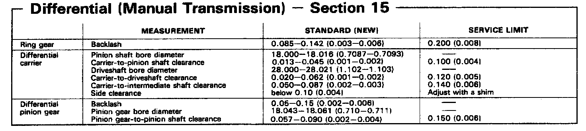

Operation CHARM
: Car repair manuals for everyone.
Home
>>
Acura
>>
1993
>>
Integra L4-1834cc 1.8L DOHC FI
>>
Repair and Diagnosis
>>
Transmission and Drivetrain
>>
Differential Assembly
>>
Specifications
>>
With Manual Transmission
With Manual Transmission
Manual Transmission Differential Measurements:
